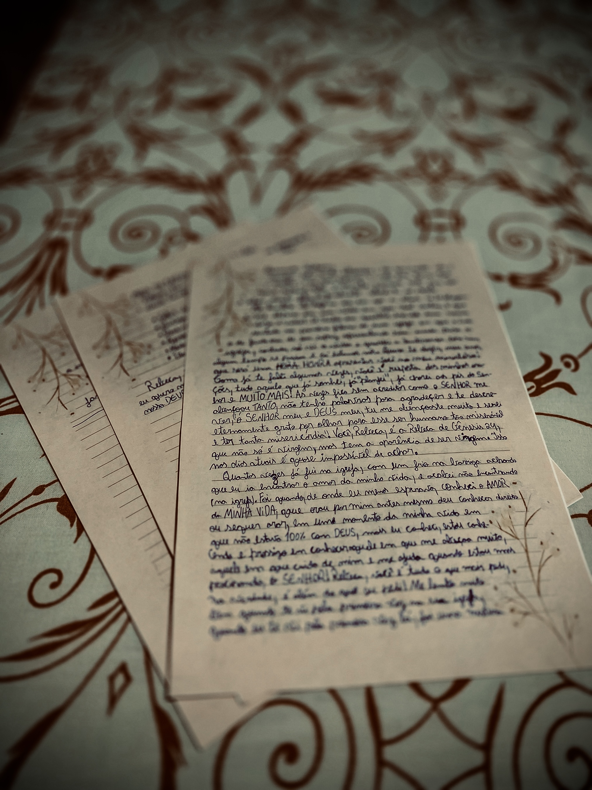
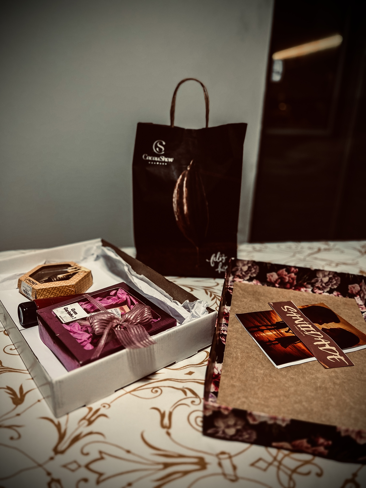

Você acha mesmo que acabou? Eu não já te disse o quanto eu te amo? É claro que eu fiz mais uma coisa para uma pessoa tão especial na minha vida! Rebeca, quero te dizer que você é muito linda e que em ti não há defeito. [Cânticos 4:7]
História da Carta
Gostou da carta, Rebeca? Eu te disse que minha letra não era das melhores, mas foi feito com grande amor para uma pessoa especial, quero te falar que eu não coloquei tudo o que eu queria lá.
Foi um grande desafio para mim, pois eu nunca escrevi uma carta para alguém na minha vida, ainda mais para uma mulher, ainda mais para o amor da minha vida. Eu pensei nisso já tem um tempo, tive várias ideias de como eu escreveria está carta e quero te dizer que vou fazer pelo menos uma dessas ideias em uma nova carta. Lembrando que essa foi feita enquanto a gente estava de recesso junino, no período em que estava com muitas saudades de você, eu só não sei como será depois que eu concluir o ensino médio, vai ser difícil da gente se ver.
Quero te dizer que não foi nem um pouco fácil fazer por causa de algumas coisas, como por exemplo a impressora que imprimia a folha torta, ou as vezes eu que errava o lado certo do papel, para ficar bem alinhado com o verso e também a parte de achar esse tema e ajeitar ele no papel, lembro-me que gastei muitas folhas, mas graças a Deus deu tudo certo.
Na parte de escrever a carta, me bati muito, pois essa foi a minha primeira, pedi muito a direção a Deus e que cada palavra que eu colocasse lá, fosse segundo a vontade dEle, lembrando que faltou colocar muita coisa lá, mas vou conversar com você e escrever mais ao longo do tempo. Espero sinceramente que você tenha gostado, foi de coração!
Tempo de Espera
Rebeca, eu quero te dizer que esse tempo de espera não será fácil, porque para as outras pessoas é loucura, mas não é. Mas vamos aproveitar esse tempo para conversarmos, é sempre muito bom a gente conversar. Precisamos disso pois isso fortalece nossos laços para ficarmos mais alinhados.